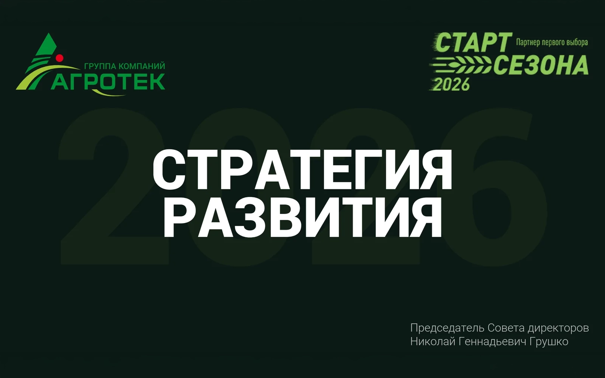
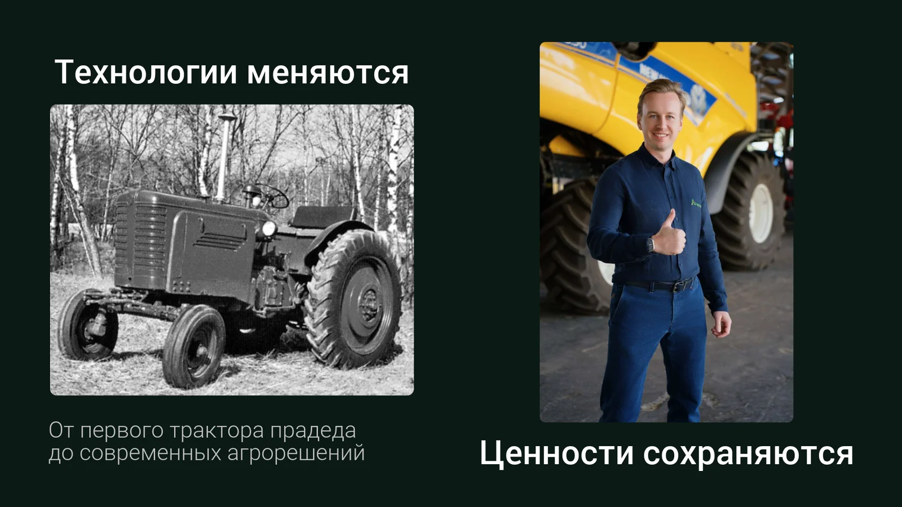
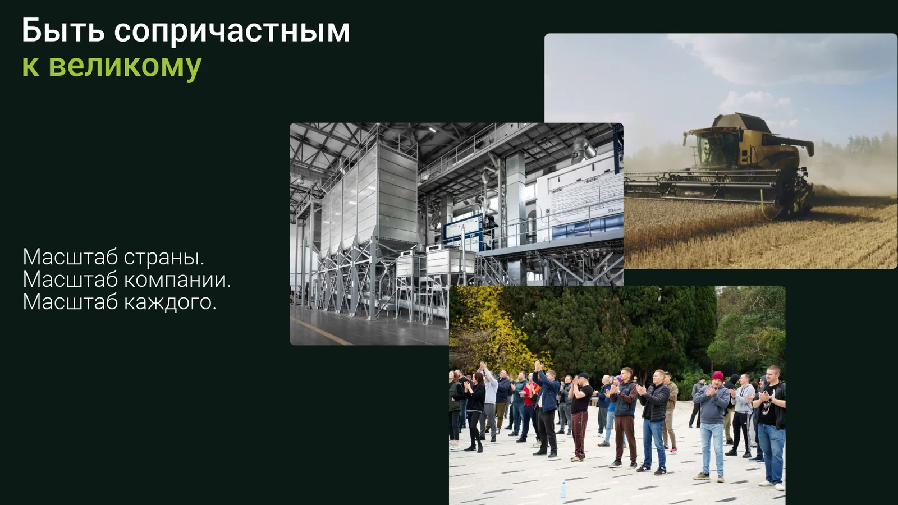
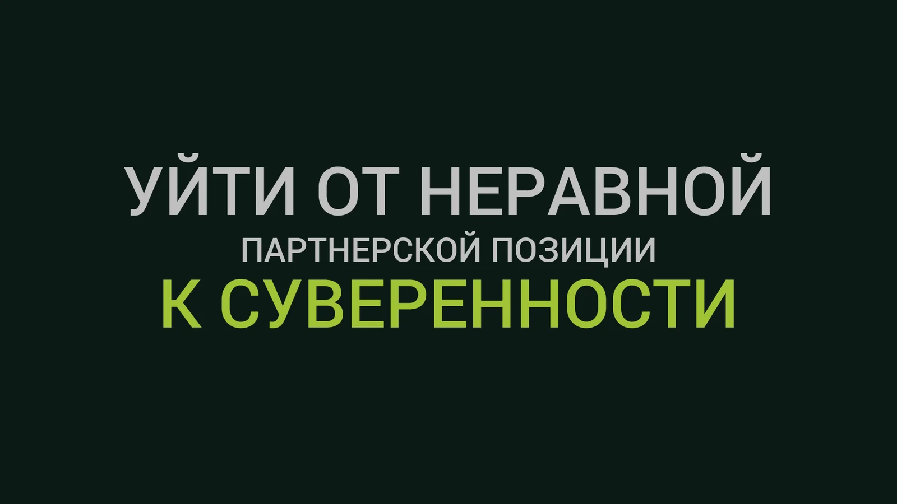
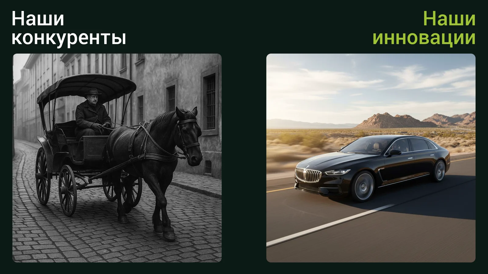
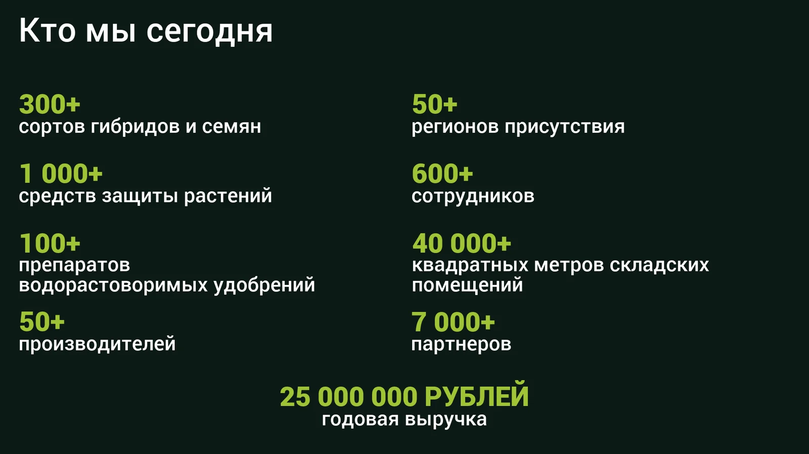
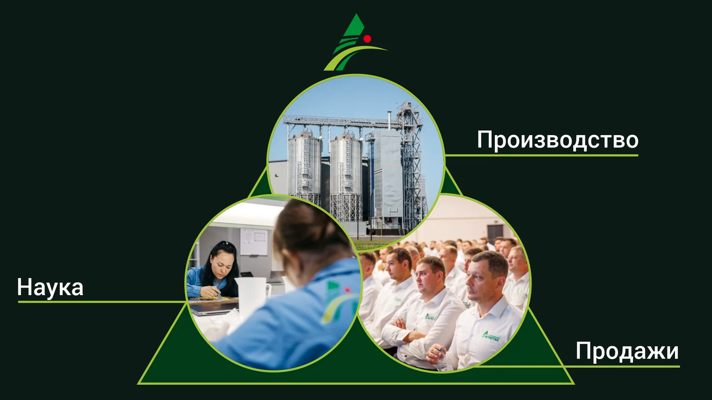
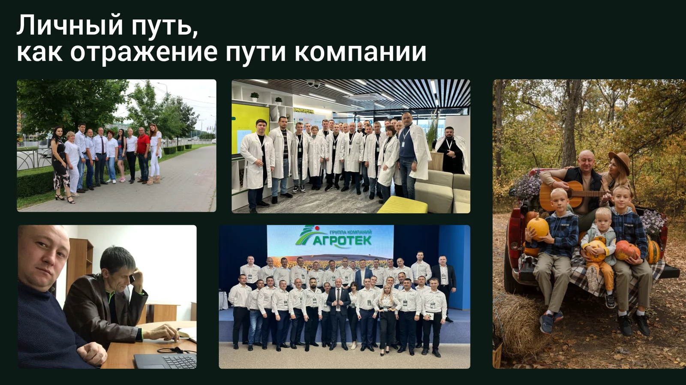
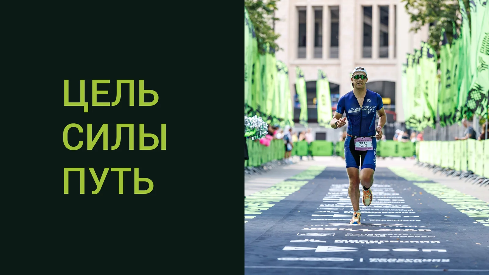
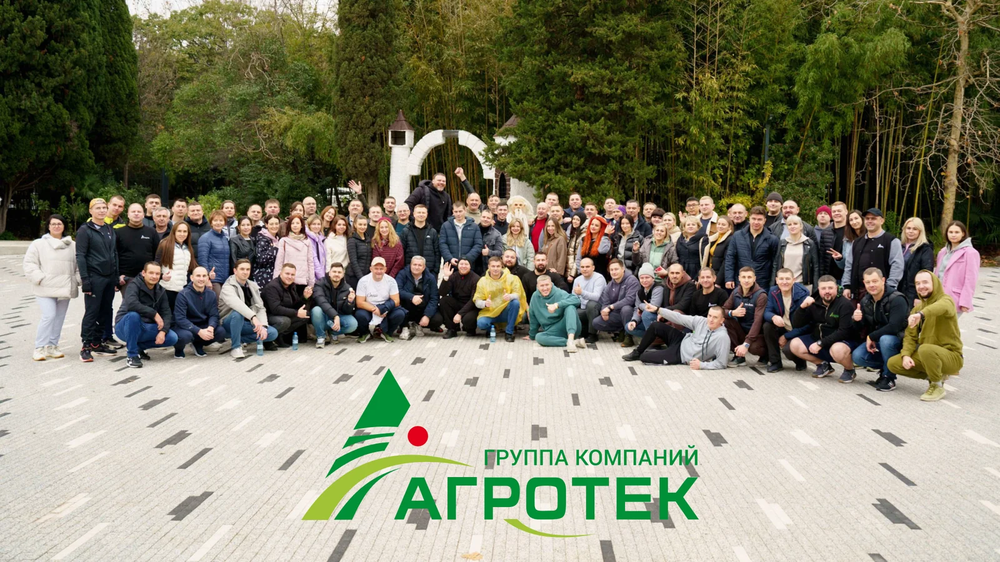

Presentation
Development strategy 2026
Multi-page strategic presentation for the Agrotek group of companies. The task is to convey the scale, ambitions and path of the company from a distributor to an independent full-cycle holding company.

Task
The Agrotek group of companies is one of the largest agricultural holdings in Russia, operating in the segment of seeds, plant protection products and fertilizers. The company has evolved from a small distributor to a vertically integrated holding with its own science, production and sales.
Task: create a strategic presentation for the Start of the 2026 Season conference, which will show the company’s path, its philosophy and ambitions. The audience is managers, partners and employees. Tone: inspiring, without pretension.
Analysis
Before starting, I analyzed the company’s positioning: Agrotek does not just sell seeds - they are building an independent system that does not depend on Western players. After the departure of global brands in 2022, the company did not retreat, but seized the vacated space.
Key insight: the company has a strong emotional narrative - from the pressure of giants to sovereignty. This became the basis for the structure of the presentation.
Narrative as a basis
Instead of dry numbers, there is a story of transformation. From pressure to sovereignty, from “I” to “We”. Each slide continues this story.
Visual Contrast
A dark background dominates B2B presentations for serious meetings. The green accent is the brand's signature color. White text - maximum contrast and readability.
Lively imagery
Memes, strong metaphors (evolution, a tree, an old tractor versus modern machinery), real photos of the team. Not corporate boredom—living energy.
Narrative
The presentation is structured as a journey - from the past to the future, from individual experience to collective purpose. Each slide is a key point in the company's history.
Opening image after the title. Great-grandfather's old tractor versus modern agricultural technology. This is about continuity - the company grew from real people with real roots, and not from offices. The slide provides an emotional anchor before the strategic part.

This slide connects personal motivation of employees with the movement of the entire company. I assembled the composition around the idea of belonging: a person sees in the development of Agrotek not an abstract corporate goal, but a continuation of their own path. Therefore, it is not the numbers that are important here, but the sense of scale - the country, the company and each participant within one story.

Here it was necessary to show the turning point without dry business language. The slide captures the state of dependence and external pressure, and then translates this emotion into the main thesis of the presentation: Agrotek is moving away from an unequal partnership to its own system of solutions. This way the strategy becomes clear not through a table, but through a strong visual contrast.

This block is intentionally bold to break the tone of a corporate presentation. Instead of a neat illustration about technology, there is a vivid comparison: competitors look like outdated metal, Agrotek looks like an engineering system of the future. The slide is designed to be memorable and adds energy to the presentation, which is often lacking in B2B presentations.

After the narrative, there are the facts. 300+ varieties, 1000+ plant protection products, 600+ employees, 7000+ partners, 25 million in revenue. The slide with numbers deliberately comes after the emotional part - the audience is already involved and ready to perceive the scale.

Process
I started by immersing myself in the company’s materials: history, values, key events. From this, the main conflict of the presentation crystallized - pressure vs sovereignty - which became the backbone of the plot.
The structure was based on the principle of a narrative arc: emotional start (history, roots) → conflict (2022, departure of Western players) → victory (holding, innovation) → inspiration (team, future). Numbers and statistics are only in the middle, when the audience is already emotionally involved.
Each slide was tested by one question: “What should the viewer feel at this moment?” If there was no answer, the slide was redone.
The departure of global players became a signal for us to attack, not retreat
The key message of the presentation that determined the entire visual tone
Visual system
Dark background #0D2318 - Agrotek’s corporate green in a dark version. This creates a feeling of depth and seriousness without losing the corporate identity. Headings - Bebas Neue, large, bold. Accent green - only on keywords.




Result
A 16-slide presentation with a single visual system and narrative from the first to the last slide. Used at the “Start of Season 2026” conference in front of an audience of 600+ employees and partners.
The main achievement is that the presentation does not look like a corporate report. This is a story with character, humor and real emotions that holds the attention of the audience from beginning to end.